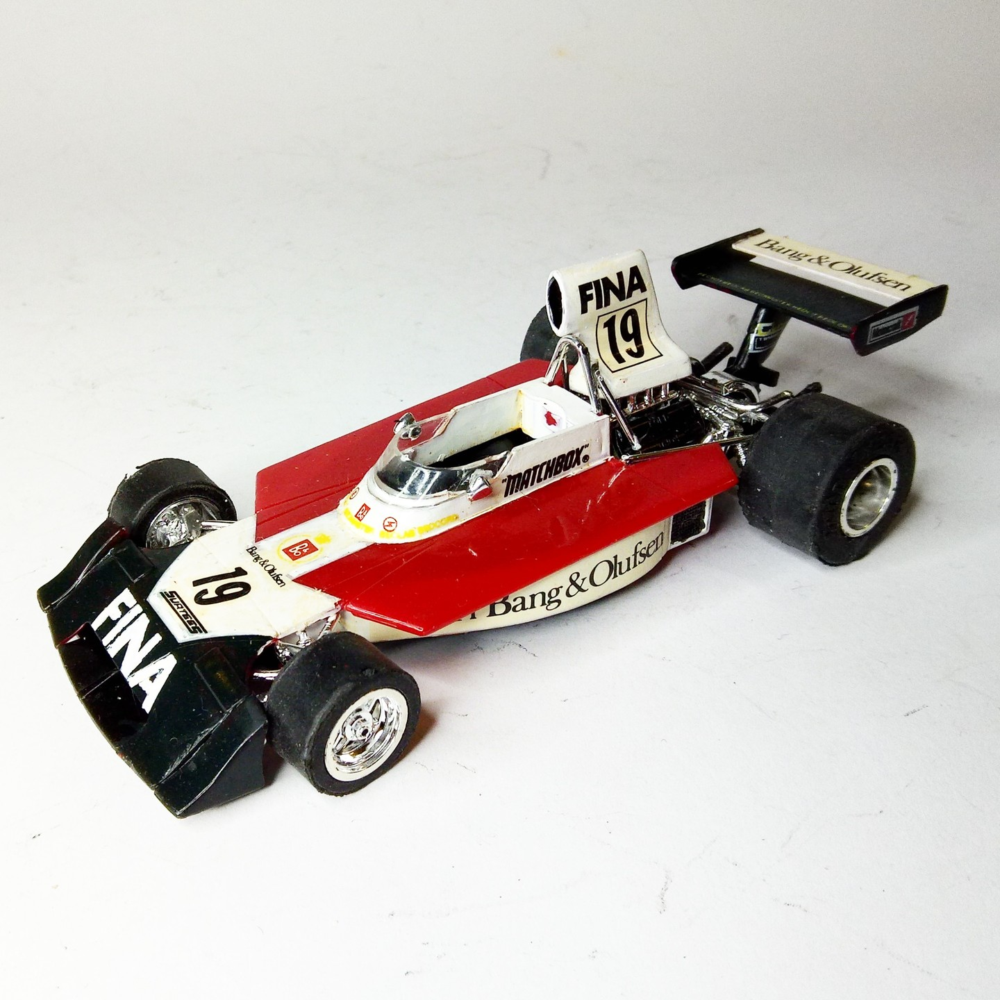
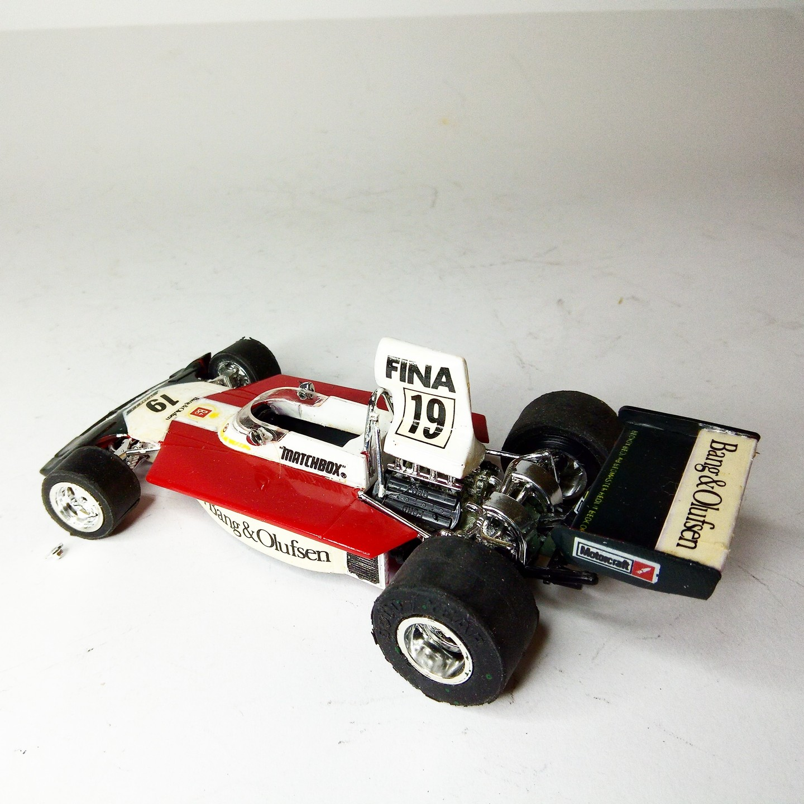

Auto e veicoli stradali · scale model archive
Surtees TS16/03 F1
Surtees TS16/03 F1 — Kit: Matchbox, Scale: 1/32. GP Silverstone 7 April 1974 #1/32 #Matchbox #Surtees

Photo gallery

English description
GP Silverstone 7 April 1974
#1/32 #Matchbox #Surtees
Descrizione italiana
GP di Silverstone, 7 aprile 1974.